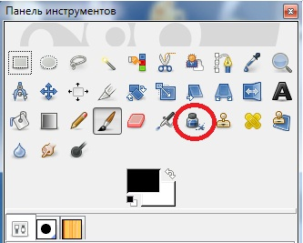

Перо
Инструмент Перо позволяет создавать имитацию каллиграфического рисования.
Форма штриха будет зависеть от направления движения кисти.
Порядок применения данного инструмента похож на применение обычной кисти, но параметры существенно отличаются.
Здесь в первую очередь располагаются параметры, отвечающие за режим смешивания штрихов и фона, а также непрозрачность накладываемых штрихов.
Далее располагаются группы параметров Коррекция, Чувствительность и Тип.
В группе Коррекция представлены следующие параметры:
• Размер определяет размер штриха инструмента, его ширину. Чем выше значение данного параметра, тем шире создаваемый штрих;
• Угол — параметр, позволяющий настроить угол пера к листу с изображением.
В группе параметров Чувствительность представлены следующие параметры:
• Размер отвечает за общий размер создаваемого штриха. Чем выше значение данного параметра, тем более крупным получится штрих;
• Наклон отвечает за общий наклон инструмента к листу с изображением;
• Скорость отвечает за мнимую скорость движения пера во время рисования. Чем выше значение данного параметра, тем более мелким, поверхностным будет создаваемый на изображении штрих.
Далее располагается группа параметров Тип.
В ней мы выбираем один из трех типов формы пера — круглый, квадратный или ромбовидный. Справа, в окошке Форма, можно подкорректировать выбранный нами тип, перемещая мышкой маленький белый квадратик внутри черного образца формы пера.
Таким образом, с помощью инструмента Перо можно рисовать каллиграфические штрихи.